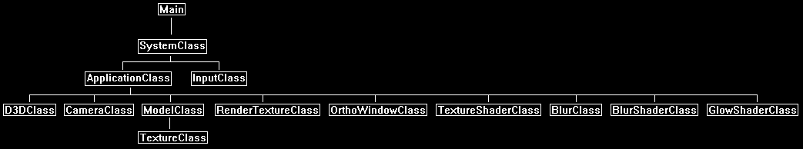

In this tutorial we will go over how to add a glow effect to your 3D and 2D rendered scenes.
The code will be written using DirectX 11 and HLSL.
This tutorial will build on the code from the blur tutorial 36.
The first part of the glow technique is to use what is known as a glow map.
This is a texture that defines where on a polygon face to apply glow, and also what color that glow should be.
For this tutorial we will be adding blue glow to the edges of our rotating cube, and so the glow map will look like the following:

Once we have our glow map, we can now perform the glow effect.
To add glow to our scene we will actually do the effect using 2D post processing.
The step-by-step process will go as follows:
1. Render our regular 3D scene to a render to texture:

2. Render the 3D scene using glow maps instead of regular texture to a second render to texture called the glow render texture:

3. Blur the glow render to texture:

4. Combine the two render to textures as a 2D step using a glow shader and a glow strength variable to control how much of the glow gets added back to the scene:

Now since we are doing this as a 2D post processing effect it will be very efficient for large scenes with lots of glow.
However, we will need to remember that different screen resolutions will affect the look of the glow.
And if we are looking for a consistent glow look, we will need to take the actual screen size (not render to texture size) as parameters into a more advanced glow and blur shader.
But for simplicity in this tutorial, we will cover just the basic glow shader to start with.
And just as a final note we must remember that glow is an emissive light.
All emissive lighting always gets added at the end of a render pass and should not have other lighting affect it.
So, if you have multiple render textures and do a large 2D post processing pass at the end of your frame, then remember to just do an addition of the emissive (glow) light as the final line in your shader.
Framework
The framework will look similar to the blur tutorial with the addition of the new GlowShaderClass.

We will start the code section by looking at the glow shader.
Glow.vs
The vertex shader is similar to other vertex shaders by just passing the transformed position and texture coordinates to the pixel shader.
////////////////////////////////////////////////////////////////////////////////
// Filename: glow.vs
////////////////////////////////////////////////////////////////////////////////
/////////////
// GLOBALS //
/////////////
cbuffer MatrixBuffer
{
matrix worldMatrix;
matrix viewMatrix;
matrix projectionMatrix;
};
//////////////
// TYPEDEFS //
//////////////
struct VertexInputType
{
float4 position : POSITION;
float2 tex : TEXCOORD0;
};
struct PixelInputType
{
float4 position : SV_POSITION;
float2 tex : TEXCOORD0;
};
////////////////////////////////////////////////////////////////////////////////
// Vertex Shader
////////////////////////////////////////////////////////////////////////////////
PixelInputType GlowVertexShader(VertexInputType input)
{
PixelInputType output;
// Change the position vector to be 4 units for proper matrix calculations.
input.position.w = 1.0f;
// Calculate the position of the vertex against the world, view, and projection matrices.
output.position = mul(input.position, worldMatrix);
output.position = mul(output.position, viewMatrix);
output.position = mul(output.position, projectionMatrix);
// Store the texture coordinates for the pixel shader.
output.tex = input.tex;
return output;
}
Glow.ps
////////////////////////////////////////////////////////////////////////////////
// Filename: glow.ps
////////////////////////////////////////////////////////////////////////////////
/////////////
// GLOBALS //
/////////////
We will require two textures for the glow pixel shader.
The first will be the regular scene render texture.
The second will be the glow scene render texture.
Texture2D colorTexture : register(t0);
Texture2D glowTexture : register(t1);
SamplerState SampleType : register(s0);
//////////////////////
// CONSTANT BUFFERS //
//////////////////////
We will also require a buffer with a glow strength variable to know how much glow we should apply to the final output color pixel.
cbuffer GlowBuffer
{
float glowStrength;
float3 padding;
};
//////////////
// TYPEDEFS //
//////////////
struct PixelInputType
{
float4 position : SV_POSITION;
float2 tex : TEXCOORD0;
};
////////////////////////////////////////////////////////////////////////////////
// Pixel Shader
////////////////////////////////////////////////////////////////////////////////
float4 GlowPixelShader(PixelInputType input) : SV_TARGET
{
float4 textureColor;
float4 glowMap;
float4 color;
First sample both the color texture and the glow map texture.
// Sample the pixel color from the texture using the sampler at this texture coordinate location.
textureColor = colorTexture.Sample(SampleType, input.tex);
// Sample the glow texture.
glowMap = glowTexture.Sample(SampleType, input.tex);
Now add the two textures together to get the final result.
The glow map is also multiplied by the glow strength to increase or decrease the amount of glow contributing to the final color.
// Add the texture color to the glow color multiplied by the glow stength.
color = saturate(textureColor + (glowMap * glowStrength));
return color;
}
Glowshaderclass.h
The GlowShaderClass follows our typical shader class layout.
////////////////////////////////////////////////////////////////////////////////
// Filename: glowshaderclass.h
////////////////////////////////////////////////////////////////////////////////
#ifndef _GLOWSHADERCLASS_H_
#define _GLOWSHADERCLASS_H_
//////////////
// INCLUDES //
//////////////
#include <d3d11.h>
#include <d3dcompiler.h>
#include <directxmath.h>
#include <fstream>
using namespace DirectX;
using namespace std;
////////////////////////////////////////////////////////////////////////////////
// Class name: GlowShaderClass
////////////////////////////////////////////////////////////////////////////////
class GlowShaderClass
{
private:
struct MatrixBufferType
{
XMMATRIX world;
XMMATRIX view;
XMMATRIX projection;
};
We will need a struct for the glow buffer type.
struct GlowBufferType
{
float glowStrength;
XMFLOAT3 padding;
};
public:
GlowShaderClass();
GlowShaderClass(const GlowShaderClass&);
~GlowShaderClass();
bool Initialize(ID3D11Device*, HWND);
void Shutdown();
bool Render(ID3D11DeviceContext*, int, XMMATRIX, XMMATRIX, XMMATRIX, ID3D11ShaderResourceView*, ID3D11ShaderResourceView*, float);
private:
bool InitializeShader(ID3D11Device*, HWND, WCHAR*, WCHAR*);
void ShutdownShader();
void OutputShaderErrorMessage(ID3D10Blob*, HWND, WCHAR*);
bool SetShaderParameters(ID3D11DeviceContext*, XMMATRIX, XMMATRIX, XMMATRIX, ID3D11ShaderResourceView*, ID3D11ShaderResourceView*, float);
void RenderShader(ID3D11DeviceContext*, int);
private:
ID3D11VertexShader* m_vertexShader;
ID3D11PixelShader* m_pixelShader;
ID3D11InputLayout* m_layout;
ID3D11Buffer* m_matrixBuffer;
The shader will require a glow buffer for setting the glow strength in the pixel shader.
ID3D11Buffer* m_glowBuffer;
ID3D11SamplerState* m_sampleState;
};
#endif
Glowshaderclass.cpp
////////////////////////////////////////////////////////////////////////////////
// Filename: glowshaderclass.cpp
////////////////////////////////////////////////////////////////////////////////
#include "glowshaderclass.h"
GlowShaderClass::GlowShaderClass()
{
m_vertexShader = 0;
m_pixelShader = 0;
m_layout = 0;
m_matrixBuffer = 0;
m_glowBuffer = 0;
m_sampleState = 0;
}
GlowShaderClass::GlowShaderClass(const GlowShaderClass& other)
{
}
GlowShaderClass::~GlowShaderClass()
{
}
bool GlowShaderClass::Initialize(ID3D11Device* device, HWND hwnd)
{
bool result;
wchar_t vsFilename[128];
wchar_t psFilename[128];
int error;
Set the glow shader file names and load the shaders.
// Set the filename of the vertex shader.
error = wcscpy_s(vsFilename, 128, L"../Engine/glow.vs");
if(error != 0)
{
return false;
}
// Set the filename of the pixel shader.
error = wcscpy_s(psFilename, 128, L"../Engine/glow.ps");
if(error != 0)
{
return false;
}
// Initialize the vertex and pixel shaders.
result = InitializeShader(device, hwnd, vsFilename, psFilename);
if(!result)
{
return false;
}
return true;
}
void GlowShaderClass::Shutdown()
{
// Shutdown the vertex and pixel shaders as well as the related objects.
ShutdownShader();
return;
}
The Render function takes in our matrices, then render texture of the scene, the blurred glow render texture, and the glow strength value.
bool GlowShaderClass::Render(ID3D11DeviceContext* deviceContext, int indexCount, XMMATRIX worldMatrix, XMMATRIX viewMatrix, XMMATRIX projectionMatrix, ID3D11ShaderResourceView* texture,
ID3D11ShaderResourceView* glowTexture, float glowStrength)
{
bool result;
// Set the shader parameters that it will use for rendering.
result = SetShaderParameters(deviceContext, worldMatrix, viewMatrix, projectionMatrix, texture, glowTexture, glowStrength);
if(!result)
{
return false;
}
// Now render the prepared buffers with the shader.
RenderShader(deviceContext, indexCount);
return true;
}
bool GlowShaderClass::InitializeShader(ID3D11Device* device, HWND hwnd, WCHAR* vsFilename, WCHAR* psFilename)
{
HRESULT result;
ID3D10Blob* errorMessage;
ID3D10Blob* vertexShaderBuffer;
ID3D10Blob* pixelShaderBuffer;
D3D11_INPUT_ELEMENT_DESC polygonLayout[2];
unsigned int numElements;
D3D11_BUFFER_DESC matrixBufferDesc;
D3D11_BUFFER_DESC glowBufferDesc;
D3D11_SAMPLER_DESC samplerDesc;
// Initialize the pointers this function will use to null.
errorMessage = 0;
vertexShaderBuffer = 0;
pixelShaderBuffer = 0;
Load the vertex shader.
// Compile the vertex shader code.
result = D3DCompileFromFile(vsFilename, NULL, NULL, "GlowVertexShader", "vs_5_0", D3D10_SHADER_ENABLE_STRICTNESS, 0, &vertexShaderBuffer, &errorMessage);
if(FAILED(result))
{
// If the shader failed to compile it should have writen something to the error message.
if(errorMessage)
{
OutputShaderErrorMessage(errorMessage, hwnd, vsFilename);
}
// If there was nothing in the error message then it simply could not find the shader file itself.
else
{
MessageBox(hwnd, vsFilename, L"Missing Shader File", MB_OK);
}
return false;
}
Load the pixel shader.
// Compile the pixel shader code.
result = D3DCompileFromFile(psFilename, NULL, NULL, "GlowPixelShader", "ps_5_0", D3D10_SHADER_ENABLE_STRICTNESS, 0, &pixelShaderBuffer, &errorMessage);
if(FAILED(result))
{
// If the shader failed to compile it should have writen something to the error message.
if(errorMessage)
{
OutputShaderErrorMessage(errorMessage, hwnd, psFilename);
}
// If there was nothing in the error message then it simply could not find the file itself.
else
{
MessageBox(hwnd, psFilename, L"Missing Shader File", MB_OK);
}
return false;
}
// Create the vertex shader from the buffer.
result = device->CreateVertexShader(vertexShaderBuffer->GetBufferPointer(), vertexShaderBuffer->GetBufferSize(), NULL, &m_vertexShader);
if(FAILED(result))
{
return false;
}
// Create the pixel shader from the buffer.
result = device->CreatePixelShader(pixelShaderBuffer->GetBufferPointer(), pixelShaderBuffer->GetBufferSize(), NULL, &m_pixelShader);
if(FAILED(result))
{
return false;
}
// Create the vertex input layout description.
polygonLayout[0].SemanticName = "POSITION";
polygonLayout[0].SemanticIndex = 0;
polygonLayout[0].Format = DXGI_FORMAT_R32G32B32_FLOAT;
polygonLayout[0].InputSlot = 0;
polygonLayout[0].AlignedByteOffset = 0;
polygonLayout[0].InputSlotClass = D3D11_INPUT_PER_VERTEX_DATA;
polygonLayout[0].InstanceDataStepRate = 0;
polygonLayout[1].SemanticName = "TEXCOORD";
polygonLayout[1].SemanticIndex = 0;
polygonLayout[1].Format = DXGI_FORMAT_R32G32_FLOAT;
polygonLayout[1].InputSlot = 0;
polygonLayout[1].AlignedByteOffset = D3D11_APPEND_ALIGNED_ELEMENT;
polygonLayout[1].InputSlotClass = D3D11_INPUT_PER_VERTEX_DATA;
polygonLayout[1].InstanceDataStepRate = 0;
// Get a count of the elements in the layout.
numElements = sizeof(polygonLayout) / sizeof(polygonLayout[0]);
// Create the vertex input layout.
result = device->CreateInputLayout(polygonLayout, numElements, vertexShaderBuffer->GetBufferPointer(), vertexShaderBuffer->GetBufferSize(), &m_layout);
if(FAILED(result))
{
return false;
}
// Release the vertex shader buffer and pixel shader buffer since they are no longer needed.
vertexShaderBuffer->Release();
vertexShaderBuffer = 0;
pixelShaderBuffer->Release();
pixelShaderBuffer = 0;
// Setup the description of the dynamic constant buffer that is in the vertex shader.
matrixBufferDesc.Usage = D3D11_USAGE_DYNAMIC;
matrixBufferDesc.ByteWidth = sizeof(MatrixBufferType);
matrixBufferDesc.BindFlags = D3D11_BIND_CONSTANT_BUFFER;
matrixBufferDesc.CPUAccessFlags = D3D11_CPU_ACCESS_WRITE;
matrixBufferDesc.MiscFlags = 0;
matrixBufferDesc.StructureByteStride = 0;
// Create the constant buffer pointer so we can access the vertex shader constant buffer from within this class.
result = device->CreateBuffer(&matrixBufferDesc, NULL, &m_matrixBuffer);
if(FAILED(result))
{
return false;
}
Create the glow buffer for controlling the glow strenth.
// Setup the description of the dynamic glow constant buffer that is in the pixel shader.
glowBufferDesc.Usage = D3D11_USAGE_DYNAMIC;
glowBufferDesc.ByteWidth = sizeof(GlowBufferType);
glowBufferDesc.BindFlags = D3D11_BIND_CONSTANT_BUFFER;
glowBufferDesc.CPUAccessFlags = D3D11_CPU_ACCESS_WRITE;
glowBufferDesc.MiscFlags = 0;
glowBufferDesc.StructureByteStride = 0;
// Create the constant buffer pointer so we can access the pixel shader constant buffer from within this class.
result = device->CreateBuffer(&glowBufferDesc, NULL, &m_glowBuffer);
if(FAILED(result))
{
return false;
}
// Create a texture sampler state description.
samplerDesc.Filter = D3D11_FILTER_MIN_MAG_MIP_LINEAR;
samplerDesc.AddressU = D3D11_TEXTURE_ADDRESS_CLAMP;
samplerDesc.AddressV = D3D11_TEXTURE_ADDRESS_CLAMP;
samplerDesc.AddressW = D3D11_TEXTURE_ADDRESS_CLAMP;
samplerDesc.MipLODBias = 0.0f;
samplerDesc.MaxAnisotropy = 1;
samplerDesc.ComparisonFunc = D3D11_COMPARISON_ALWAYS;
samplerDesc.BorderColor[0] = 0;
samplerDesc.BorderColor[1] = 0;
samplerDesc.BorderColor[2] = 0;
samplerDesc.BorderColor[3] = 0;
samplerDesc.MinLOD = 0;
samplerDesc.MaxLOD = D3D11_FLOAT32_MAX;
// Create the texture sampler state.
result = device->CreateSamplerState(&samplerDesc, &m_sampleState);
if(FAILED(result))
{
return false;
}
return true;
}
void GlowShaderClass::ShutdownShader()
{
// Release the sampler state.
if(m_sampleState)
{
m_sampleState->Release();
m_sampleState = 0;
}
// Release the glow constant buffer.
if(m_glowBuffer)
{
m_glowBuffer->Release();
m_glowBuffer = 0;
}
// Release the matrix constant buffer.
if(m_matrixBuffer)
{
m_matrixBuffer->Release();
m_matrixBuffer = 0;
}
// Release the layout.
if(m_layout)
{
m_layout->Release();
m_layout = 0;
}
// Release the pixel shader.
if(m_pixelShader)
{
m_pixelShader->Release();
m_pixelShader = 0;
}
// Release the vertex shader.
if(m_vertexShader)
{
m_vertexShader->Release();
m_vertexShader = 0;
}
return;
}
void GlowShaderClass::OutputShaderErrorMessage(ID3D10Blob* errorMessage, HWND hwnd, WCHAR* shaderFilename)
{
char* compileErrors;
unsigned __int64 bufferSize, i;
ofstream fout;
// Get a pointer to the error message text buffer.
compileErrors = (char*)(errorMessage->GetBufferPointer());
// Get the length of the message.
bufferSize = errorMessage->GetBufferSize();
// Open a file to write the error message to.
fout.open("shader-error.txt");
// Write out the error message.
for(i=0; i<bufferSize; i++)
{
fout << compileErrors[i];
}
// Close the file.
fout.close();
// Release the error message.
errorMessage->Release();
errorMessage = 0;
// Pop a message up on the screen to notify the user to check the text file for compile errors.
MessageBox(hwnd, L"Error compiling shader. Check shader-error.txt for message.", shaderFilename, MB_OK);
return;
}
bool GlowShaderClass::SetShaderParameters(ID3D11DeviceContext* deviceContext, XMMATRIX worldMatrix, XMMATRIX viewMatrix, XMMATRIX projectionMatrix, ID3D11ShaderResourceView* texture,
ID3D11ShaderResourceView* glowTexture, float glowStrength)
{
HRESULT result;
D3D11_MAPPED_SUBRESOURCE mappedResource;
MatrixBufferType* dataPtr;
GlowBufferType* dataPtr2;
unsigned int bufferNumber;
Start by setting our matrices as usual.
// Transpose the matrices to prepare them for the shader.
worldMatrix = XMMatrixTranspose(worldMatrix);
viewMatrix = XMMatrixTranspose(viewMatrix);
projectionMatrix = XMMatrixTranspose(projectionMatrix);
// Lock the martix constant buffer so it can be written to.
result = deviceContext->Map(m_matrixBuffer, 0, D3D11_MAP_WRITE_DISCARD, 0, &mappedResource);
if(FAILED(result))
{
return false;
}
// Get a pointer to the data in the matrix constant buffer.
dataPtr = (MatrixBufferType*)mappedResource.pData;
// Copy the matrices into the matrix constant buffer.
dataPtr->world = worldMatrix;
dataPtr->view = viewMatrix;
dataPtr->projection = projectionMatrix;
// Unlock the matrix constant buffer.
deviceContext->Unmap(m_matrixBuffer, 0);
// Set the position of the constant buffer in the vertex shader.
bufferNumber = 0;
// Now set the matrix constant buffer in the vertex shader with the updated values.
deviceContext->VSSetConstantBuffers(bufferNumber, 1, &m_matrixBuffer);
Setup the glow buffer with the glow strength so that we can dynamically control the amount of glow that contributes to the scene in the pixel shader.
// Lock the constant buffer so it can be written to.
result = deviceContext->Map(m_glowBuffer, 0, D3D11_MAP_WRITE_DISCARD, 0, &mappedResource);
if(FAILED(result))
{
return false;
}
// Get a pointer to the data in the constant buffer.
dataPtr2 = (GlowBufferType*)mappedResource.pData;
// Copy the data into the constant buffer.
dataPtr2->glowStrength = glowStrength;
dataPtr2->padding = XMFLOAT3(0.0f, 0.0f, 0.0f);
// Unlock the constant buffer.
deviceContext->Unmap(m_glowBuffer, 0);
// Set the position of the constant buffer in the pixel shader.
bufferNumber = 0;
// Now set the constant buffer in the pixel shader with the updated values.
deviceContext->PSSetConstantBuffers(bufferNumber, 1, &m_glowBuffer);
Now set the first texture to be the color texture, which is the first render texture of the regular scene.
And next set the second texture in the pixel shader to be our blurred glow render texture.
// Set shader texture resource in the pixel shader.
deviceContext->PSSetShaderResources(0, 1, &texture);
deviceContext->PSSetShaderResources(1, 1, &glowTexture);
return true;
}
void GlowShaderClass::RenderShader(ID3D11DeviceContext* deviceContext, int indexCount)
{
// Set the vertex input layout.
deviceContext->IASetInputLayout(m_layout);
// Set the vertex and pixel shaders that will be used to render the triangles.
deviceContext->VSSetShader(m_vertexShader, NULL, 0);
deviceContext->PSSetShader(m_pixelShader, NULL, 0);
// Set the sampler state in the pixel shader.
deviceContext->PSSetSamplers(0, 1, &m_sampleState);
// Render the triangles.
deviceContext->DrawIndexed(indexCount, 0, 0);
return;
}
Applicationclass.h
////////////////////////////////////////////////////////////////////////////////
// Filename: applicationclass.h
////////////////////////////////////////////////////////////////////////////////
#ifndef _APPLICATIONCLASS_H_
#define _APPLICATIONCLASS_H_
/////////////
// GLOBALS //
/////////////
const bool FULL_SCREEN = false;
const bool VSYNC_ENABLED = true;
const float SCREEN_NEAR = 0.3f;
const float SCREEN_DEPTH = 1000.0f;
///////////////////////
// MY CLASS INCLUDES //
///////////////////////
#include "d3dclass.h"
#include "inputclass.h"
#include "cameraclass.h"
#include "modelclass.h"
#include "rendertextureclass.h"
#include "blurclass.h"
#include "glowshaderclass.h"
////////////////////////////////////////////////////////////////////////////////
// Class name: ApplicationClass
////////////////////////////////////////////////////////////////////////////////
class ApplicationClass
{
public:
ApplicationClass();
ApplicationClass(const ApplicationClass&);
~ApplicationClass();
bool Initialize(int, int, HWND);
void Shutdown();
bool Frame(InputClass*);
private:
bool RenderSceneToTexture(float);
bool RenderGlowToTexture(float);
bool Render();
private:
D3DClass* m_Direct3D;
CameraClass* m_Camera;
ModelClass* m_Model;
We will require two render textures. One for the regular scene, and one for the glow scene.
RenderTextureClass *m_RenderTexture, *m_GlowTexture;
We will need a 2D full screen window for the 2D post processing glow effect.
OrthoWindowClass* m_FullScreenWindow;
TextureShaderClass* m_TextureShader;
The blur and blur shader objects will also be required for blurring the rendered glow scene.
BlurShaderClass* m_BlurShader;
BlurClass* m_Blur;
And finally, the glow shader is added to combine the regular scene and the glow scene together.
GlowShaderClass* m_GlowShader;
};
#endif
Applicationclass.cpp
////////////////////////////////////////////////////////////////////////////////
// Filename: applicationclass.cpp
////////////////////////////////////////////////////////////////////////////////
#include "applicationclass.h"
ApplicationClass::ApplicationClass()
{
m_Direct3D = 0;
m_Camera = 0;
m_Model = 0;
m_RenderTexture = 0;
m_GlowTexture = 0;
m_FullScreenWindow = 0;
m_TextureShader = 0;
m_BlurShader = 0;
m_Blur = 0;
m_GlowShader = 0;
}
ApplicationClass::ApplicationClass(const ApplicationClass& other)
{
}
ApplicationClass::~ApplicationClass()
{
}
bool ApplicationClass::Initialize(int screenWidth, int screenHeight, HWND hwnd)
{
char modelFilename[128], textureFilename[128], glowMapFilename[128];
int downSampleWidth, downSampleHeight;
bool result;
// Create and initialize the Direct3D object.
m_Direct3D = new D3DClass;
result = m_Direct3D->Initialize(screenWidth, screenHeight, VSYNC_ENABLED, hwnd, FULL_SCREEN, SCREEN_DEPTH, SCREEN_NEAR);
if(!result)
{
MessageBox(hwnd, L"Could not initialize Direct3D.", L"Error", MB_OK);
return false;
}
Setup our camera and also render a base view matrix for the blur class to use.
// Create and initialize the camera object.
m_Camera = new CameraClass;
m_Camera->SetPosition(0.0f, 0.0f, -5.0f);
m_Camera->Render();
m_Camera->RenderBaseViewMatrix();
The model will take in two textures.
The first is the regular color texture, and the second is our new glow map.
// Create and initialize the cube model object.
m_Model = new ModelClass;
strcpy_s(modelFilename, "../Engine/data/cube.txt");
strcpy_s(textureFilename, "../Engine/data/stone01.tga");
strcpy_s(glowMapFilename, "../Engine/data/glowmap001.tga");
result = m_Model->Initialize(m_Direct3D->GetDevice(), m_Direct3D->GetDeviceContext(), modelFilename, textureFilename, glowMapFilename);
if(!result)
{
MessageBox(hwnd, L"Could not initialize the cube model object.", L"Error", MB_OK);
return false;
}
Create a render texture and a glow render texture. They are created the exact same way for both.
// Create and initialize the render to texture object.
m_RenderTexture = new RenderTextureClass;
result = m_RenderTexture->Initialize(m_Direct3D->GetDevice(), screenWidth, screenHeight, SCREEN_DEPTH, SCREEN_NEAR, 1);
if(!result)
{
MessageBox(hwnd, L"Could not initialize the render texture object.", L"Error", MB_OK);
return false;
}
// Create and initialize the glow render to texture object.
m_GlowTexture = new RenderTextureClass;
result = m_GlowTexture->Initialize(m_Direct3D->GetDevice(), screenWidth, screenHeight, SCREEN_DEPTH, SCREEN_NEAR, 1);
if(!result)
{
MessageBox(hwnd, L"Could not initialize the glow render texture object.", L"Error", MB_OK);
return false;
}
Create a full screen ortho window since the glow shader will need that to do 2D post processing.
// Create and initialize the full screen ortho window object.
m_FullScreenWindow = new OrthoWindowClass;
result = m_FullScreenWindow->Initialize(m_Direct3D->GetDevice(), screenWidth, screenHeight);
if(!result)
{
MessageBox(hwnd, L"Could not initialize the full screen window object.", L"Error", MB_OK);
return false;
}
We will use a texture shader to do most of the regular rendering.
// Create and initialize the texture shader object.
m_TextureShader = new TextureShaderClass;
result = m_TextureShader ->Initialize(m_Direct3D->GetDevice(), hwnd);
if(!result)
{
MessageBox(hwnd, L"Could not initialize the texture shader object.", L"Error", MB_OK);
return false;
}
Create the blur related objects here.
// Create and initialize the blur shader object.
m_BlurShader = new BlurShaderClass;
result = m_BlurShader->Initialize(m_Direct3D->GetDevice(), hwnd);
if(!result)
{
MessageBox(hwnd, L"Could not initialize the blur shader object.", L"Error", MB_OK);
return false;
}
// Set the size to sample down to.
downSampleWidth = screenWidth / 2;
downSampleHeight = screenHeight / 2;
// Create and initialize the blur object.
m_Blur = new BlurClass;
result = m_Blur->Initialize(m_Direct3D, downSampleWidth, downSampleHeight, SCREEN_NEAR, SCREEN_DEPTH, screenWidth, screenHeight);
if(!result)
{
MessageBox(hwnd, L"Could not initialize the blur object.", L"Error", MB_OK);
return false;
}
And finally create our new glow shader class object.
// Create and initialize the glow shader object.
m_GlowShader = new GlowShaderClass;
result = m_GlowShader->Initialize(m_Direct3D->GetDevice(), hwnd);
if(!result)
{
MessageBox(hwnd, L"Could not initialize the glow shader object.", L"Error", MB_OK);
return false;
}
return true;
}
All of the objects are released in the Shutdown function.
void ApplicationClass::Shutdown()
{
// Release the glow shader object.
if(m_GlowShader)
{
m_GlowShader->Shutdown();
delete m_GlowShader;
m_GlowShader = 0;
}
// Release the blur object.
if(m_Blur)
{
m_Blur->Shutdown();
delete m_Blur;
m_Blur = 0;
}
// Release the blur shader object.
if(m_BlurShader)
{
m_BlurShader->Shutdown();
delete m_BlurShader;
m_BlurShader = 0;
}
// Release the texture shader object.
if(m_TextureShader)
{
m_TextureShader->Shutdown();
delete m_TextureShader;
m_TextureShader = 0;
}
// Release the full screen ortho window object.
if(m_FullScreenWindow)
{
m_FullScreenWindow->Shutdown();
delete m_FullScreenWindow;
m_FullScreenWindow = 0;
}
// Release the glow render texture object.
if(m_GlowTexture)
{
m_GlowTexture->Shutdown();
delete m_GlowTexture;
m_GlowTexture = 0;
}
// Release the render texture object.
if(m_RenderTexture)
{
m_RenderTexture->Shutdown();
delete m_RenderTexture;
m_RenderTexture = 0;
}
// Release the cube model object.
if(m_Model)
{
m_Model->Shutdown();
delete m_Model;
m_Model = 0;
}
// Release the camera object.
if(m_Camera)
{
delete m_Camera;
m_Camera = 0;
}
// Release the Direct3D object.
if(m_Direct3D)
{
m_Direct3D->Shutdown();
delete m_Direct3D;
m_Direct3D = 0;
}
return;
}
So, the four steps discussed at the beginning of this tutorial are performed here in the Frame function.
First, we render our regular scene to a texture.
Second, we render our glow scene to it's own render texture.
Third, we blur the glow render texture after it has been rendered.
And fourth, we combine the regular scene and glow scene render textures together in the final Render function.
bool ApplicationClass::Frame(InputClass* Input)
{
static float rotation = 0.0f;
bool result;
// Check if the escape key has been pressed, if so quit.
if(Input->IsEscapePressed() == true)
{
return false;
}
// Update the rotation variable each frame.
rotation -= 0.0174532925f * 0.25f;
if(rotation < 0.0f)
{
rotation += 360.0f;
}
// Render the regular scene to a texture.
result = RenderSceneToTexture(rotation);
if(!result)
{
return false;
}
// Render the glow map to a texture.
result = RenderGlowToTexture(rotation);
if(!result)
{
return false;
}
// Use the blur object to blur the glow map texture.
result = m_Blur->BlurTexture(m_Direct3D, m_Camera, m_GlowTexture, m_TextureShader, m_BlurShader);
if(!result)
{
return false;
}
// Render the final graphics scene.
result = Render();
if(!result)
{
return false;
}
return true;
}
Render the rotating textured cube to a render texture.
bool ApplicationClass::RenderSceneToTexture(float rotation)
{
XMMATRIX worldMatrix, viewMatrix, projectionMatrix;
bool result;
// Set the render target to be the render to texture. Also clear the render to texture.
m_RenderTexture->SetRenderTarget(m_Direct3D->GetDeviceContext());
m_RenderTexture->ClearRenderTarget(m_Direct3D->GetDeviceContext(), 0.0f, 0.0f, 0.0f, 1.0f);
// Get the world, view, and projection matrices from the camera and d3d objects.
m_Direct3D->GetWorldMatrix(worldMatrix);
m_Camera->GetViewMatrix(viewMatrix);
m_Direct3D->GetProjectionMatrix(projectionMatrix);
// Rotate the world matrix by the rotation value so that the cube will spin.
worldMatrix = XMMatrixRotationY(rotation);
// Render the cube using the texture shader.
m_Model->Render(m_Direct3D->GetDeviceContext());
result = m_TextureShader->Render(m_Direct3D->GetDeviceContext(), m_Model->GetIndexCount(), worldMatrix, viewMatrix, projectionMatrix, m_Model->GetTexture1());
if(!result)
{
return false;
}
// Reset the render target back to the original back buffer and not the render to texture anymore. Also reset the viewport back to the original.
m_Direct3D->SetBackBufferRenderTarget();
m_Direct3D->ResetViewport();
return true;
}
Now render the same scene to the glow render texture.
Also, when we render the spinning cube we set its glow map texture instead of the regular stone texture.
bool ApplicationClass::RenderGlowToTexture(float rotation)
{
XMMATRIX worldMatrix, viewMatrix, projectionMatrix;
bool result;
// Set the render target to be the glow render texture and clear it.
m_GlowTexture->SetRenderTarget(m_Direct3D->GetDeviceContext());
m_GlowTexture->ClearRenderTarget(m_Direct3D->GetDeviceContext(), 0.0f, 0.0f, 0.0f, 1.0f);
// Get the world, view, and projection matrices from the camera and d3d objects.
m_Direct3D->GetWorldMatrix(worldMatrix);
m_Camera->GetViewMatrix(viewMatrix);
m_Direct3D->GetProjectionMatrix(projectionMatrix);
// Rotate the world matrix by the rotation value so that the cube will spin.
worldMatrix = XMMatrixRotationY(rotation);
// Render the cube using the texture shader using the glow texture this time (m_Model->GetTexture2).
m_Model->Render(m_Direct3D->GetDeviceContext());
result = m_TextureShader->Render(m_Direct3D->GetDeviceContext(), m_Model->GetIndexCount(), worldMatrix, viewMatrix, projectionMatrix, m_Model->GetTexture2());
if(!result)
{
return false;
}
// Reset the render target back to the original back buffer and not the render to texture anymore. Also reset the viewport back to the original.
m_Direct3D->SetBackBufferRenderTarget();
m_Direct3D->ResetViewport();
return true;
}
bool ApplicationClass::Render()
{
XMMATRIX worldMatrix, baseViewMatrix, orthoMatrix;
float glowValue;
bool result;
// Clear the buffers to begin the scene.
m_Direct3D->BeginScene(0.0f, 0.5f, 0.8f, 1.0f);
Since this will be 2D rendering we need to get the base view matrix and the ortho matrix.
// Get the world, view, and projection matrices from the camera and d3d objects.
m_Direct3D->GetWorldMatrix(worldMatrix);
m_Camera->GetBaseViewMatrix(baseViewMatrix);
m_Direct3D->GetOrthoMatrix(orthoMatrix);
Turn off the Z buffer since we are doing a 2D rendering pass.
// Begin 2D rendering and turn off the Z buffer.
m_Direct3D->TurnZBufferOff();
Set the glow strength to make the glow twice as strong.
// Set the glow strength we want.
glowValue = 2.0f;
Now render our 2D full screen window and perform the glow shader effect using the scene render texture, the glow render texture, and the glow strength.
// Render the full screen window using the glow shader.
m_FullScreenWindow->Render(m_Direct3D->GetDeviceContext());
result = m_GlowShader->Render(m_Direct3D->GetDeviceContext(), m_FullScreenWindow->GetIndexCount(), worldMatrix, baseViewMatrix, orthoMatrix,
m_RenderTexture->GetShaderResourceView(), m_GlowTexture->GetShaderResourceView(), glowValue);
if(!result)
{
return false;
}
We are done 2D rendering so we can turn the Z buffer back on.
// Re-enable the Z buffer after 2D rendering complete.
m_Direct3D->TurnZBufferOn();
// Present the rendered scene to the screen.
m_Direct3D->EndScene();
return true;
}
Summary
We can now apply selective glow to our scene using glow maps.

To Do Exercises
1. Recompile and run the program. You should see a rotating cube with glowing edges.
2. Modify the glow strength to see the effect it has.
3. Create a different glow map and apply it to this scene.
4. Automate the glow strength to go up and down in a range over several frames to create a pulsing glow effect.
Source Code
Source Code and Data Files: dx11win10tut46_src.zip